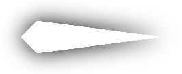
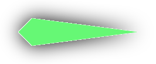
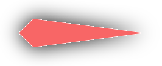

Что такое Darknet?
Darknet – это сеть, которая не доступна для обычных браузеров и не индексируется поисковыми системами. Она была создана в качестве средства анонимного общения и обмена информацией в случае, если обычные каналы связи заблокируют или отключат. Darknet имеет свою собственную архитектуру и технологии, которые обеспечивают безопасность и анонимность пользователей.
История Darknet
Идея создания Darknet возникла еще в начале 2000-х годов, когда группа хакеров создала сеть TOR (The Onion Router), которая позволяет пользователям анонимно общаться и обмениваться информацией. TOR использует множество серверов для маршрутизации трафика, что делает его очень сложным для отслеживания и прослушивания.
В последующие годы Darknet стало местом, где пользователи могут общаться и обмениваться информацией в полной анонимности. Однако, на Darknet быстро стали появляться и преступные элементы, которые использовали его для совершения киберпреступлений, продажи запрещенных товаров и услуг, а также для организации других противозаконных деятельностей.
В настоящее время существует множество сетей Darknet, которые используются для различных целей, от общения до совершения преступлений. Несмотря на это, Darknet остается важным инструментом для защиты свободы слова и прав на анонимность в Интернете.
Как работает Darknet?
Darknet работает на основе сети анонимных узлов, которые соединяются друг с другом через различные маршрутизаторы и шлюзы, чтобы создать защищенную среду обмена информацией. Один из наиболее известных инструментов для доступа к Darknet - это браузер Tor (The Onion Router).
Tor использует сложную систему шифрования и перенаправления трафика, чтобы обеспечить анонимность пользователей и защитить их данные от прослушивания. Когда пользователь заходит на сайт в Darknet, его запросы проходят через ряд узлов и маршрутизаторов, перенаправляясь каждый раз на новый узел, что делает очень трудным отслеживание местонахождения идентичности пользователя.
Darknet также использует специальные протоколы и сетевые технологии, такие как I2P (Invisible Internet Project), Freenet и другие, чтобы обеспечить анонимность пользователей и защитить их данные.
Преимущества Darknet
- Анонимность - Darknet позволяет пользователям скрыть свой IP-адрес и местоположение, обеспечивая высокий уровень анонимности при использовании сети.
- Безопасность - Сайты на Darknet часто используют шифрование для защиты информации, а также используют множество мер безопасности, чтобы обеспечить конфиденциальность своих пользователей.
- Свобода выражения - Darknet позволяет пользователям свободно общаться и обмениваться информацией без цензуры и ограничений, которые могут быть присутствовать на Clearnet.
Недостатки Darknet
- Риск безопасности - Darknet также может быть использован для проведения незаконных действий, таких как продажа наркотиков, оружия и других запрещенных товаров, что может представлять угрозу для безопасности пользователей.
- Необходимость специальных программ - Для доступа к Darknet требуется специальное программное обеспечение, такое как Tor, что может создавать трудности для новичков.
- Не все сайты на Darknet законны - Некоторые сайты на Darknet нарушают закон, что может привести к преследованию и наказанию пользователей, использующих сеть для доступа к этим сайтам.